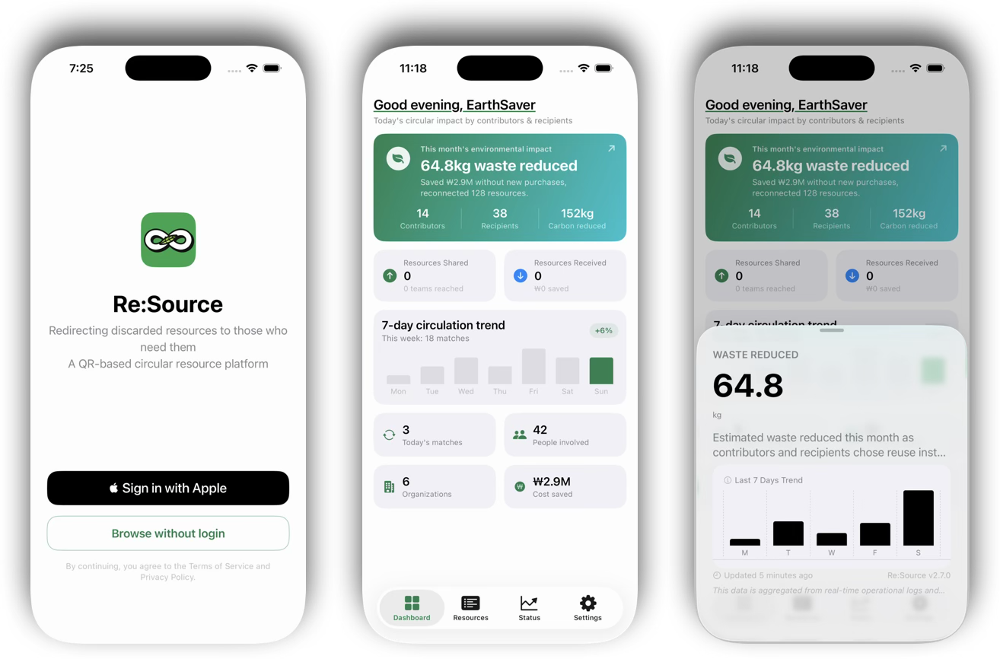
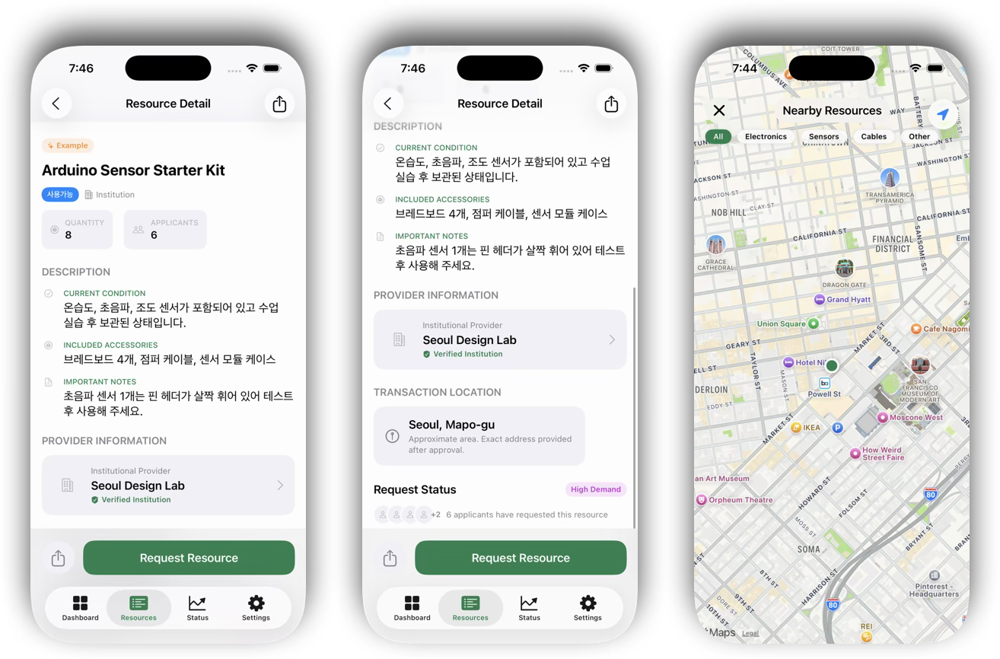
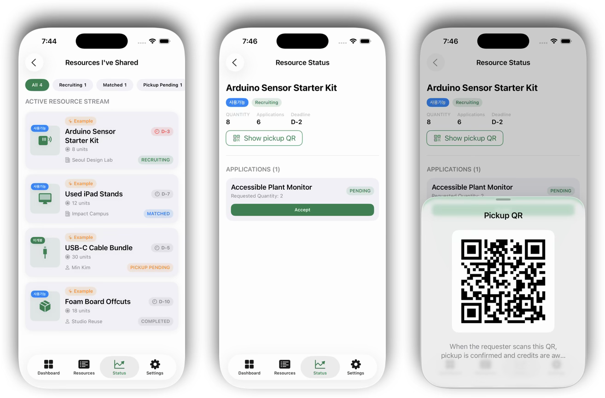

Circulate,
don't discard.
Re:Source is a QR-based resource circulation platform that gives leftover project materials and idle electronics a second life — within the communities that create them.
A walkthrough of Re:Source
Screen recording from the Seoul Design Award 2026 submission — from dashboard impact to listing, discovery, and QR handoff.
Every workshop, studio, and lab leaves materials behind. Re:Source turns that surplus into circulating assets — building a culture of circulation, not disposal.
Three steps, one loop
Dashboard, Resources, and Status work together to turn surplus into shared, measurable circulation.
See your circular impact
View your carbon footprint, estimated savings, and local circulation activity at a glance.

Find it, then match it
Browse nearby resources by location, then review each listing before applying. When a recipient submits a request, the provider can review the applicant and confirm the match.

Confirm with a QR, earn rewards
QR confirmation records a completed handover for both the provider and recipient. Both users earn participation rewards, which can support priority in future resource requests.

Built around the loop of reuse
From tagging an item to tracking your community impact, every step is designed to make passing resources on effortless.
QR-tagged resources
Every item gets its own QR code, so listing, finding, and handing off a resource takes seconds.
Resource circulation
List, discover, and request materials and devices — then pass them on to keep the loop going.
Map discovery
A built-in map surfaces resources nearby, making in-person exchange simple and local.
Impact visualization
See resources circulated and waste avoided across your community — circulation made measurable.
Community first
Designed for the people who already share space — schools, studios, and maker collectives.
Bilingual by design
Ships in English and Korean, ready for both local communities and a global audience.
Four steps to keep resources moving
Tag
Register a leftover material or device and generate its QR code.
Discover
Browse and search what's available across your community and map.
Request
Claim what you need and arrange a quick local handoff.
Circulate
When you're done, pass it on — and watch the impact add up.
Communities that build and create
Give your materials a second life.
Re:Source is in active development for iOS as a Seoul Design Award 2026 entry. Reach out to follow the journey or collaborate.